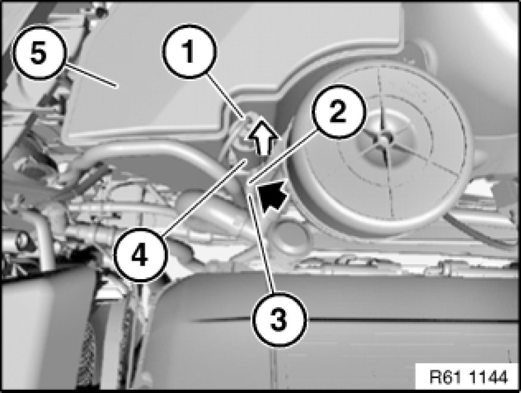

Headlamp Washer Pump: Service and Repair
61 67 010 - Removing and installing/replacing washer pump of headlight cleaning system

Note:
Drain washer fluid tank.

Unfasten plug connection (1) and disconnect.
Press lock (2) and detach hose (3) from washer pump of headlight cleaning system (4).
Pull washer pump of headlight cleaning system (4) in direction of arrow out of washer fluid reservoir (5).
Installation:
Replace sealing ring/strainer of washer pump.
Coat sealing ring of washer pump with antiseize agent.
Ensure hose is laid without kinks.
Fill washer fluid reservoir.